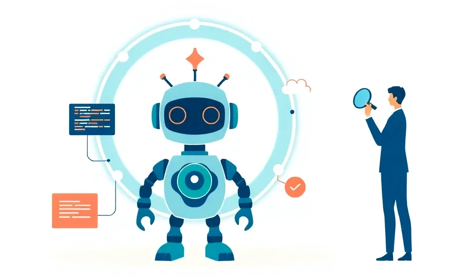

🤖 Les Coding Agents en 2026
État des lieux au 8 novembre 2026 : outils, fonctionnement, mesures, risques et perspectives.

De quoi parle-t-on ?
Un coding agent est un modèle de langage placé dans une boucle et doté d'outils : il lit le code, modifie des fichiers, lance des commandes et des tests, observe le résultat et recommence jusqu'à atteindre l'objectif. La différence avec un assistant d'autocomplétion : l'agent agit sur plusieurs étapes, et un humain fixe l'objectif, les limites et relit le résultat.
Une année en cinq faits
- L'usage s'est généralisé : selon JetBrains, 90 % des développeurs professionnels interrogés de mai à juillet 2026 utilisent des agents de code au moins chaque semaine, 68 % chaque jour.
- Les agents sont partout : terminal, éditeur, application de bureau et cloud, souvent chez le même éditeur.
- Les standards se sont ouverts : MCP, AGENTS.md puis Agent Skills sont gérés par l'Agentic AI Foundation, sous l'égide de la Linux Foundation.
- Le marché s'est consolidé : rachats et arrêts en série, et passage général à la facturation à l'usage.
- La mesure est devenue difficile : SWE-bench Verified a été délaissé pour cause de contamination, et les nouveaux benchmarks changent de version tous les quelques mois.
Les modèles phares à cette date
Ces noms changeront vite. Le parcours s'attache surtout à ce qui dure : la mécanique, la mesure et les bonnes pratiques.
📑 Plan
- Ce qu'on prévoyait pour 2026, et ce qui s'est passé
- Panorama des outils
- Comment fonctionne un coding agent
- Mesurer les agents : benchmarks et terrain
- Sécurité et gouvernance
- Perspectives
- Références
Ce parcours remplace Coding Agents en 2025, conservé en archive. Chaque chiffre renvoie à une source primaire consultée le 8 novembre 2026 ; les affirmations qui n'ont pas pu être vérifiées ont été retirées.
Sources (consultées le 8 novembre 2026) : JetBrains 2026, Agentic AI Foundation, actualités Anthropic, flux d'actualités OpenAI, Gemini 4 Argon, Gemini 4 Carbon.